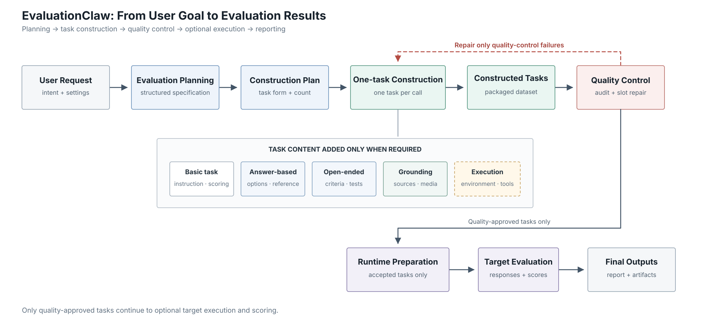

EvaluationClaw 一次完整运行
本文严格按照当前代码的一次实际运行顺序展开。每一步说明它接收什么、做什么、产生什么，以及何时跳过、重试或停止。文中所说的“可选”均由本次配置和已有资源决定。
用户需求与配置 → 可选翻译 → 可选规划前研究 → 单个 Planner 阶段设计完整 BenchmarkPlan → 每个 Blueprint 一次 Builder 调用 → 数据集包装 → QC 与定点修复 → 可选人工复核 → 通过题目的环境准备 → 可选目标执行与评分 → 可选结果驱动改进 → 报告与产物

1. 接收需求和运行配置
进入：一段自然语言评测需求，以及模型、研究、规模、构题、QC、执行和输出设置。
离开：原始需求和本次运行使用的配置。
通过命令行启动时，框架先检查需求是否为空，并校验有限取值、并发数、超时、修复次数和比例等参数。校验失败时，任何模型调用都不会开始。通过 Python 接口直接创建配置时，调用方负责提供语义有效的数值。
运行开始时会清空上一轮网络后端的临时状态，避免先前搜索失败或限流状态影响本次运行。
1.1 框架内部模型和待测模型相互独立
框架内部有 Planner、Task Builder、QC、Judge、Research 和结果改进六种模型职责。每个职责可以单独配置模型、提供方、密钥和地址；未单独配置的字段继承默认编排模型的对应连接信息。多轮任务还可以使用独立的 Task Agent 充当用户模拟器或任务专属评分器。
待测目标模型只回答最终进入执行视图的题目，不参与规划、构题和 QC。可以配置多个目标，也可以完全不配置目标。参考模型仅供成对比较题使用。
1.2 不配置目标模型时仍然可以出题
没有目标模型或明确关闭目标执行时，框架仍会完成研究、规划、构题、QC、可选人工复核、报告和导出。此时不会产生逐题模型响应；目标列表为空时汇总也为空，目标已配置但执行被关闭时则保留零题汇总。
2. 可选地把需求翻译成英文
进入：原始自然语言需求。
离开：供研究和规划使用的需求文本。
只有需求包含中日韩统一表意文字并且 Planner 连接可用时，框架才请求模型返回英文等义版本。翻译必须保留技术意图、范围、数量、约束、模型名和领域术语；如果评测对象本身是非英语能力，英文版本只描述该要求，不改变被测语言。
无需翻译、模型不可用、调用失败、返回为空或解析失败时，后续步骤直接使用原始需求。
3. 可选地执行规划前 Deep Research
进入：上一步得到的需求，以及研究开关和可选的现成研究摘要。
离开：原需求，加上一份可选的结构化研究摘要。
仅当启用 Deep Research 且配置中还没有现成研究摘要时才运行。Research 连接不可用、Web 研究关闭或搜索后端为 none 时，本步骤返回空，Planner 继续只依赖需求和自身知识。
每轮研究依次完成：生成有限数量的查询；搜索网页并抓取少量候选页面；把材料压缩为与测评设计相关的发现；检查领域结构、已有 benchmark、来源和构题投入参照是否仍有缺口；如有缺口则生成下一轮查询。达到完成条件或轮数上限后，框架把发现整理为领域概览、能力分类、已有 benchmark、种子来源、示例、构题投入参照和引用。整理失败时使用已收集材料生成尽力而为的摘要。
Planner 实际收到的是压缩版本，目前包含领域概览、能力分类、已有 benchmark 及其已知不足、E1–E3 构题投入参照。完整种子来源、示例和引用保留在研究摘要和最终产物中，但不进入当前 Planner 的压缩资源。
4. Planner 直接设计完整 BenchmarkPlan
进入：需求、框架提供的设计限制、Planner Skill、统一 JSON 格式，以及可选的研究摘要。
离开：包含全部维度、TaskDesign 和 Blueprint 的完整规划。
这里没有“先生成一份 EvalSpec，再由另一次 Planner 调用拆 Blueprint”的两个模型阶段。每次规划尝试都要求 Planner 从需求理解一直完成到全部 Blueprint 分配。它的基础 system prompt 说明身份和资源读取方式，随后加载完整的 benchmark 设计 Skill 和输出格式。
用户请求与本次题目设计限制被组合成一份只读指令资源。限制包括可选目标信息、规模等级、未指定题量时的默认值、可用题型、可用评分指标、可用环境类别和可选参考模型。研究摘要存在时作为第二份只读资源提供。Planner 最终只能返回纯 JSON。
4.1 规划中的三个层级
- Dimension：一个独立测量维度，说明测量目标、与相邻维度的边界、测量方法、必需内容和排除项。
- TaskDesign：Dimension 内的一组任务设计。它指定题型、题数、E1–E3 构题投入、内容范围、输入、交互、环境、输出、评分、来源和构建要求。简单题可以用一个 TaskDesign 描述一批题；复杂题可以用一个 TaskDesign 具体描述一道题。
- Blueprint：一次 Task Builder 调用负责的工作包。它只引用本维度中的一个或多个 TaskDesign，并解释这些题组为什么适合一起构建、为什么总工作量能够由一次调用完成。
同一 Blueprint 可以包含多道题和多种题型，但所有 TaskDesign 必须属于同一 Dimension。所有 Blueprint 的并集必须让每个 TaskDesign 恰好出现一次。
4.2 解析、审计和重试
框架先把 Planner 返回解析成完整计划，再执行确定性审计：维度、TaskDesign 和 Blueprint ID 必须唯一；必要的目标、边界、内容描述和工作量理由必须存在；环境类别必须是运行时支持的类别；交互题必须声明环境；每个 Blueprint 只能引用本维度中的 TaskDesign；每个 TaskDesign 必须且只能被一个 Blueprint 引用。
解析或审计失败时，框架把全部问题、上一版返回和“尽量少改动正确部分”的要求交给 Planner，请它重新返回完整规划 JSON。达到最大次数仍不合格时，规划阶段直接失败，不会采用最后一个无效版本。
Planner 连接未配置时，主规划入口直接失败并明确提示需要配置 Planner role，不会静默采用简化计划。离线 smoke test 如需构造保守 Blueprint，必须显式调用对应的本地 helper。
4.3 从完整计划派生后续规格
计划通过审计后，框架从 TaskDesign 汇总出后续数据集所需的规格：每个维度的题数、题型分配、最高构题投入、来源需求、生成题数和来源型题数，以及整套 benchmark 的总题数和评分指标。这个规格是完整计划的派生视图，不是新的 Planner 输出。
5. 把每个 Blueprint 变成一次 Builder 调用
进入：通过审计的完整计划和派生规格。
离开：一组与 Blueprint 一一对应的构题作业。
框架不会把 Blueprint 预先拆成单题调用。一个 Blueprint 形成一个作业，一次 Task Builder 调用必须返回它引用的所有 TaskDesign 所规定的全部任务。不同 Blueprint 可以并发构建；完成后仍按 Planner 给出的顺序合并。
5.1 为当前 Blueprint 准备来源
Planner 已提供的 URL 会先直接成为候选来源，直到达到每个 Blueprint 的来源上限。如果该维度还被派生为需要来源、Web 研究已开启且 Research 连接可用，框架再使用 TaskDesign 中的查询搜索；没有查询时生成与维度和 Blueprint 内容有关的默认查询。找到的标题、URL 和压缩摘要与 Builder 返回的新资源一起进入本轮构题结果。
5.2 Builder 实际收到的内容
基础 system prompt 要求 Builder 实现一个 Planner 已设计好的 Blueprint，并返回纯 JSON。user payload 包含整套测评目标、当前维度、当前 Blueprint、其完整 TaskDesign、所需任务总数、各题型数量、各 TaskDesign 数量、来源上下文以及任务字段契约。
没有环境要求时，请求中不出现环境构题协议。存在环境要求时，框架根据每个 TaskDesign 的环境类别，确定性地加载环境构题 Skill，并只附加当前 Blueprint 用到的参考说明；混合 Blueprint 中的路由表会标明环境说明适用于哪些 TaskDesign。
当当前维度的构题投入为 E3、这是首次构建且 Web 研究可用时，Builder 可以在受限次数和字符预算内搜索或抓取公开材料。
5.3 三种 Builder 模式
- llm：必须由远程 Builder 生成；连接缺失或最终无法通过结构检查时直接失败。
- local：不调用 Builder 模型，按 TaskDesign 使用本地构题实现。
- auto：优先调用远程 Builder；连接不可用或结构修复耗尽时使用本地任务补足。
6. 解析、检查和修复 Builder 返回
进入：一次 Blueprint 作业的模型返回。
离开：该 Blueprint 的完整任务和资源，或一个明确失败。
远程 Builder 必须返回一个对象，其中包含构建说明、资源数组和任务数组。任务数组长度必须等于本次要求的数量；各题型数量和每个 TaskDesign 对应的数量必须完全匹配。每道任务通过元数据中的 TaskDesign ID 与 Planner 的具体题组设计关联。
框架把返回字段规范化为统一任务对象，然后逐题检查：ID、标题和题面完整；维度、题型和构题投入正确；判断、选择、简答和代码题拥有必要答案或测试；评分可用；LLM Builder 已完成构题投入自检；环境字段与 Blueprint 一致；同一 Blueprint 内没有完全重复的题面。Docker 和 GUI 环境还会执行各自的文件隔离、运行材料、评分器和环境完整性检查。
6.1 普通结构修复
无法解析或结构检查失败时，框架把当前发现的全部问题和上一份完整返回交回 Builder，要求重新返回完整对象。修复提示要求只改动被问题指出的字段，并尽量保留正确的题面、文件、环境行为和评分。严格模式在重试耗尽后失败；auto 模式改用本地构题补足整个 Blueprint。
6.2 输出截断恢复
如果响应因输出预算耗尽而截断，框架不解析残缺 JSON。它让同一个 TaskBuilder 模型压缩当前被截断的输出，用摘要替换该 assistant 消息后在原对话中继续；此前的初始请求、摘要、工具调用和工具结果原样保留。达到截断重试上限后，该 Blueprint 构建失败。
当前环境一致性约束：环境 Skill 的路由可以按 TaskDesign 选择参考说明，但结构验证仍通过 Blueprint 的单一环境类型检查任务。因此，一个 Blueprint 当前应只包含同一种环境语义；把静态 TaskDesign 与环境 TaskDesign 混在同一 Blueprint，或在同一 Blueprint 混合多种环境类型，会与后续结构验证不一致。
6.3 合并全部作业
每个成功作业的任务、资源和构建说明按原计划顺序合并，形成完整构题集合，即 TaskSuite。
7. 把 TaskSuite 变成 run-ready 形态
进入：完整构题集合和派生规格。
离开：供 QC、执行和导出共同使用的 run-ready TaskSuite。
每道完整任务在构题整合时被就地转换成统一 benchmark item（保存在 TaskSuite.tasks）。题面、题型、选项、参考答案、rubric、测试代码、构题投入、来源、标签和 Builder 追踪信息被保留下来。任务的详细评分说明会在需要时合并为 item 的 rubric。
任务带有环境时，框架在此自动生成三组规范化运行元数据：执行器需要的环境与文件定义；目标代理的 system prompt、初始内容、交互和评分信息；可执行任务包中的可见输入、隐藏参考、产物、轨迹和来源约束。Builder 不需要重复手写这些完整协议。
TaskSuite 同时保存完整计划、全部 Blueprint、来源列表和构建说明，后续 QC 修复可以由任意 item 的 source_definition 找回原 TaskDesign 交给 TaskBuilder。
8. 执行 QC 和定点修复
进入：完整 benchmark 数据集。
离开：最终数据集和一份通过、拒绝、问题及质量分报告。
8.1 一轮 QC
- 逐题程序化检查：检查题型所需答案、rubric、测试、交互协议、环境和可执行任务包。
- 整套程序化检查：检查完全重复、近似重复、维度覆盖、题量和 batch 一致性。
- 可选 LLM QC：QC 模型检查分层样本的清晰度、答案可靠性、评分、来源、能力覆盖和环境执行链。普通规模最多取 50 题；large/xlarge 使用配置的抽样上限。模型不可用时跳过，调用失败时增加 warning，程序化检查仍然有效。
QC 模型被要求一次报告样本中所有有证据的问题，但不得为了显得严格而制造问题，也不得把同一根因换几种说法重复报告。每个 error 使对应 item 进入拒绝列表；没有 item ID 的 error 是整套数据级问题。warning 不拒绝 item。
质量分从 1 开始，按总题数归一化扣除：每个 error 扣 0.2，每个 warning 扣 0.05。没有 error 且质量分至少为 0.8 时，QC 报告才被视为可接受。
8.2 只修复有 error 的题
框架由 error 的 item 找到原 Blueprint。只重新调用受影响的 Blueprint；数据级 error 会影响全部 Blueprint。修复请求只包含该 Blueprint 中被 error 指向的任务、对应问题和原任务，Builder 必须保持这些任务 ID，并且只返回这些替代任务。同一 Blueprint 中没有 error 的任务不发送给 Builder，也不会被重写。
修复结果按任务 ID 合并回原 TaskSuite，再重新包装整个数据集并重新运行完整 QC。循环最多执行配置的轮数。最后仍有拒绝题或质量分低于 0.8 时，默认停止；只有显式允许不完整 benchmark 才可以继续。
允许不完整 benchmark：拒绝题继续保留在数据集和审计信息中，但后续执行视图只选择通过题。
9. 可选地执行人工复核
进入：自动 QC 后的数据集和 QC 结果。
离开：人工批准的数据集，或按反馈重建并重新 QC 的数据集。
只有启用人工复核且当前调用方提供了交互输入函数时才运行。框架展示目标、维度、计划题量、通过题量和题型分布。用户批准后继续；用户提出反馈时，Planner Review 根据当前规格、题目摘要和 QC 问题决定维度增删合并拆分、题目移动或删除等修改。
修改先作用于当前规格和题目视图，然后同一个 Planner Skill 根据更新后的规格重新生成完整 TaskDesign 与 Blueprint 计划；接着整套题重新构建和 QC。最多进行三轮人工复核。
10. 建立执行视图并准备环境
进入：最终数据集、最终 QC 和执行配置。
离开：只含 QC 通过题目的不可变执行视图，以及环境检查报告。
框架确认 item ID 唯一，并检查 QC 的通过与拒绝列表没有重复、未知 ID 或重叠。执行视图严格按通过列表选择题目。
环境检查只查看这些通过题：容器题检查 Docker 和镜像；需要 VM 的桌面题准备访客文件并探测 VM provider；不使用 VM 的桌面题探测 GUI bridge；配置要求 lm-eval 时检查可执行程序。直接执行已开启且存在容器题时，还会在目标调用前试跑容器设置和 evaluator。
直接执行开启时，任何环境阻塞都会在第一个目标请求前终止。没有目标执行时仍可能完成环境探测，但不做容器 evaluator 预检，也不会因为环境报告中的阻塞而停止后续报告生成。
如果通过题包含多模态输入且目标执行开启，框架还会提前验证所有目标和必要的参考模型是否支持相应输入；不支持时整次目标执行在首个请求前停止。
11. 按 task_type 调用目标模型并评分
进入：执行视图、目标模型、可选参考模型、Judge 和 Task Agent 配置。
离开：逐题结果、目标汇总和运行审计，即 EvalRun。
内置 direct runner 按“每个目标 × 每道通过题”顺序执行。当前执行器首先检查 task_type，而不是扫描任务的所有字段后动态组合执行能力。只有进入 agent interaction 分支后，才继续根据环境类型创建工具后端。
11.1 题型硬分派
| task_type | 目标交互 | 实际评分 |
|---|---|---|
| yes_no | 单轮文本调用。 | 识别回答中的 yes/no，与参考答案比较。 |
| multiple_choice | 把题面和选项拼成单轮请求。 | 解析选项字母或选项文本，与正确答案比较。 |
| short_answer | 单轮文本调用。 | 完全匹配得 1；参考答案作为回答子串出现时得 0.8；没有参考答案时落入 Judge。 |
| open_generation | 单轮文本或多模态调用。 | 通用 Judge 根据 item、rubric 和回答评分；默认双轮评分取平均。 |
| code_execution | 单轮调用，让目标返回代码或文本。 | 把目标输出嵌入题目的测试代码，在 Python 容器 sandbox 中执行；退出成功得 1，否则得 0。 |
| multi_turn | 先发送初始用户消息，再发送预设轮次；没有预设轮次时由 Task Agent 生成后续用户消息，直到停止或达到轮数上限。 | Judge 对完整 transcript 评分。 |
| agent_interaction | 创建工具环境，循环执行“模型调用 → 工具动作 → 环境观察”，直到完成或达到步数上限。 | 环境自身的确定性状态或 evaluator 分数。 |
| pairwise_preference | 同一道题分别调用目标模型和参考模型。 | Judge 判定目标胜、平或负，分别映射到 1、0.5、0。 |
多模态不是独立分派类型；它只改变目标调用的输入结构，之后仍按上述 task_type 评分。每道题的异常被记录为该目标上的 error 和 0 分，其他题继续执行。缺少目标密钥同样产生逐题 error。
11.2 agent interaction 的环境分派
| 环境 | 执行后端 | 评分来源 |
|---|---|---|
| docker_workspace | 完整 Docker workspace，可包含镜像构建、服务和标准浏览器工具。 | test command 或结构化 evaluator。 |
| gui | 通过 GUI bridge 或 VM provider 创建桌面会话，并发送鼠标、键盘、截图和文件动作。 | 桌面 bridge 的 evaluate 接口返回分数。 |
OpenAI/Anthropic 兼容目标优先使用原生 tool calling；其他目标使用文本 JSON action。Runner 保存每步模型输出、工具调用、工具结果、观察、错误、当步分数和最终状态。
dialogue 环境由 multi-turn 对话路线表达，不由 agent 环境工厂创建。因此 multi_turn + dialogue 是当前正常组合；agent_interaction + dialogue 会在创建环境时失败。
字段存在不等于字段会执行：当前由 task_type 决定执行器。给 open generation、short answer、code execution 或 multi-turn 题附加工具环境，不会让它们自动进入多步环境交互。需要真实工具操作的任务必须使用 agent interaction，并选择该执行器支持的环境。
11.3 当前评分协议的优先级
Builder 的通用 scoring 对象会在包装时成为 rubric 或任务代理评分信息，但 Runner 没有一个按任意 scoring.method 动态寻找评分器的通用解释器。判断、选择、简答和代码题使用各自硬编码规则；agent interaction 使用环境 evaluator；开放生成和多轮对话使用 Judge；成对比较使用 pairwise Judge。
通用 Judge 没有配置时，需要 Judge 的题得 0 并记录错误。任务代理评分方法明确指定为 task-agent judge 且 Task Agent 可用时，使用任务专属评分模型代替通用 Judge。
11.4 汇总和外部 runner
每个目标的汇总包含无 error 结果的总体平均分、各维度平均分、各题型平均分、结果数和 error 数。error 不进入平均分分母。
- direct：只执行上述内置流程。
- lm-eval：关闭内置目标循环，只尝试外部 lm-eval。
- auto：先执行内置流程，再尝试 lm-eval。
lm-eval 只有在存在目标和输出目录时运行，并且只导出不会改变评分语义的选择题、判断题和带参考答案的简答题。开放生成、代码和 agent 任务仍只由 direct runner 执行。某个目标的 lm-eval 失败会记录在运行产物中，不阻止继续处理其他目标。
12. 模型表现分析与验证
进入：正式 benchmark、QC 结果、逐题作答和目标汇总。
离开：模型弱点分析、强化建议，以及可选的独立验证轮次。
配置 Analyser 后，本步骤分析正式运行结果，给出有证据支持的模型弱点和强化建议。QC 不默认进入上下文；需要区分模型问题、题目问题或基础设施问题时，Analyser 可以通过只读工具读取当前 run 中保存的 QC 和其他产物。
当证据不足时，Analyser 可以在配置的轮数预算内返回验证用 TaskDesign。验证题经过标准构题、QC、环境准备和执行流程，结果在下一轮分析中作为新证据；验证题只保存在 Analysis 记录中，不替换正式 benchmark。预算耗尽后返回最终结论。
13. 生成报告并保存全部产物
进入：最终计划、数据集、QC、运行结果、Analysis 记录和可选研究摘要。
离开：内存中的完整运行包，以及配置输出目录时的文件产物。
框架先从正式运行生成 Markdown 报告，内容包括目标、派生规格、维度、TaskSuite、来源、QC、评分语义、运行审计、逐题结果、目标汇总、模型表现分析和强化建议。随后把规范化需求、完整 BenchmarkPlan、派生 EvalSpec、最终 TaskSuite、最终 QC、正式运行、Analysis 记录、报告和研究摘要组合成 BenchmarkPackage。
配置输出目录时，框架再次根据最终 QC 建立只含通过题目的导出视图，并保存：
- 完整运行包 JSON；
- Markdown 报告；
- 可在浏览器中检查题目、环境、QC 和结果的自包含 HTML 报告；
- 选择题与 exact-match 题可用的 lm-eval JSONL/YAML，以及未导出 item 列表；
- 存在 Deep Research 时的研究摘要 JSON 和 Markdown；
- 列出上述文件位置的 manifest。
写出前，框架会把形如 sk-... 的密钥字符串替换为脱敏标记。无论是否配置目标模型，完整运行包都会返回给调用方。